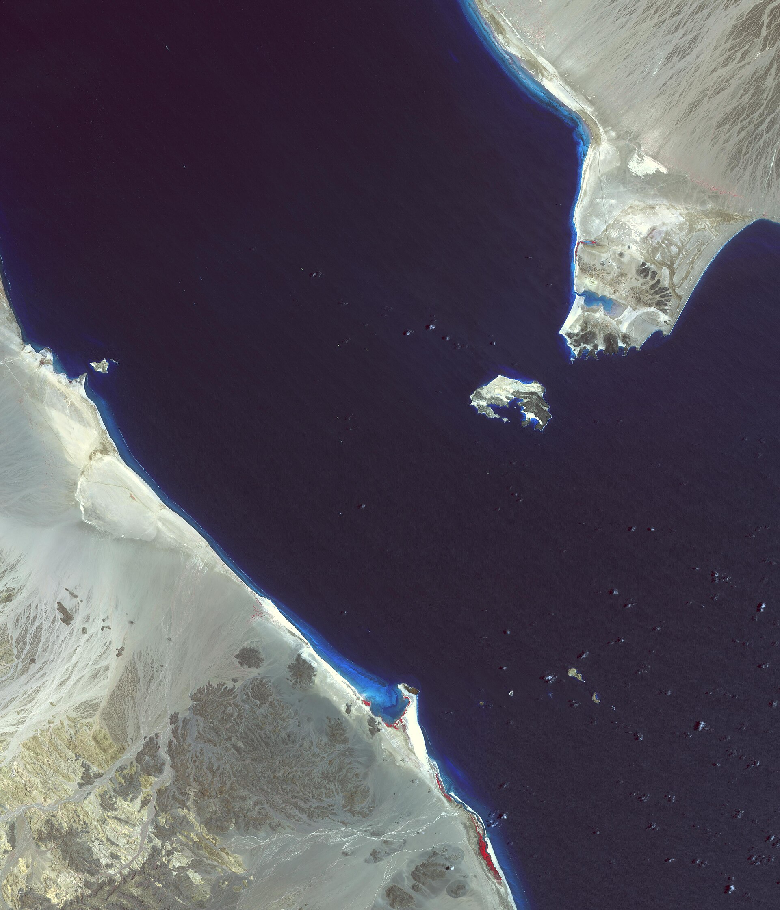

Хуситы заняли ещё два стратегических острова в Красном море, Саудовская Аравия нанесла удары
Под контроль взяты острова Большой и Малый Ханиш. Через пролив Баб-эль-Мандеб проходит примерно 12 процентов мировой торговли.

Движение хуситов в Йемене 14 сентября 2026 года объявило о взятии под контроль ещё двух островов на юге Красного моря — Большого и Малого Ханиша. Тем самым они усилили свой контроль над проливом Баб-эль-Мандеб.
До захвата островов хуситы взяли под контроль прибрежный портовый город Моха и остров Маюн (Перим).
Ответ Саудовской Аравии
Саудовская Аравия нанесла воздушные удары по аэропорту в занятом хуситами городе Моха. В ответ хуситы осуществили ракетные и беспилотные атаки по саудовским военным объектам.
Правительственные силы Йемена, в свою очередь, сообщили о продвижении на направлении Таиза на юге страны.
Почему важен Баб-эль-Мандеб
Баб-эль-Мандеб — узкий пролив, соединяющий Красное море с Индийским океаном. Он считается одним из важнейших морских «узких мест» в мире.
- Доля в мировой торговле: ~12%
- Доля в перевозимой морем нефти: ~11%
- Доля в потоке сжиженного природного газа (СПГ): ~8%
- Пролив является южной точкой входа на маршрут Суэцкого канала
Для Саудовской Аравии это направление важно и как альтернатива Ормузскому проливу для выхода на азиатские рынки.
Влияние на торговые пути
С 2023 года из-за обстановки с безопасностью в Красном море крупные контейнерные перевозчики изменили свои маршруты, направив суда вокруг мыса Доброй Надежды на юге Африки. Этот путь значительно длиннее и дороже прохода через Суэцкий канал.
Перебои на морских путях считаются одним из факторов, повысивших интерес к сухопутным коридорам. Для государств Центральной Азии это связано со значением Транскаспийского маршрута («Среднего коридора»): в январе — августе 2026 года перевозки по этому направлению выросли на 22 процента.
Региональный фон
Конфликт в Йемене продолжается с 2014 года. Движение хуситов контролирует северную часть страны, включая столицу Сану; международно признанное правительство действует на юге.
В 2026 году напряжённость в регионе связывается и с ситуацией вокруг Ирана. В сентябре в Совете Безопасности ООН продолжился спор о санкциях против Ирана; одновременно опасения по поводу поставок нефти с Ближнего Востока отразились на мировых ценах.
Косвенное влияние на Центральную Азию
Рост цен на нефть становится для стран-импортёров фактором инфляции. В Кыргызстане годовая инфляция в 2026 году оставалась выше 11 процентов, и в официальных аналитических материалах мировые цены на нефть были названы одной из причин.
Для стран-экспортёров, таких как Казахстан и Туркменистан, рост цен увеличивает доходы бюджета, однако повышение логистических расходов и ставок страхования частично уменьшает эту выгоду.
Неясные моменты
Острова Ханиш
Острова Большой и Малый Ханиш расположены в южной части Красного моря, между Йеменом и Эритреей. В 1990-х годах они были предметом территориального спора между Йеменом и Эритреей; спор был разрешён через международный арбитраж.
Острова считаются малонаселённой территорией, однако их военно-стратегическое значение велико: они расположены в точках, удобных для наблюдения за судоходными путями и их контроля.
Остров Маюн (Перим) расположен непосредственно в проливе Баб-эль-Мандеб и делит его на два канала.
Порт Моха
Моха — портовый город на побережье Красного моря в Йемене. Исторически он известен как центр торговли кофе; название города легло и в основу названия сорта кофе.
В нынешнем конфликте город и его аэропорт считаются важными объектами с военной точки зрения. Саудовская Аравия нанесла по аэропорту удар с воздуха.
Влияние на морскую торговлю
Через пролив Баб-эль-Мандеб обычно проходит примерно 12 процентов мировой торговли. Этим направлением пользуются около 11 процентов перевозимой морем нефти и 8 процентов сжиженного природного газа.
С 2023 года из-за обстановки с безопасностью в районе крупные контейнерные перевозчики изменили маршруты: суда идут вокруг мыса Доброй Надежды на юге Африки вместо Суэцкого канала.
Этот путь требует примерно на 10–14 дней больше времени на направлении Азия — Европа и увеличивает расходы на топливо. Выросли и ставки страхования.
Влияние на сухопутные коридоры
Перебои на морских путях стали одним из факторов, повысивших интерес к сухопутным маршрутам. Перевозки по Транскаспийскому международному транспортному маршруту — «Среднему коридору» — в январе — августе 2026 года выросли на 22 процента.
Вместе с тем объём сухопутных маршрутов остаётся небольшим по сравнению с морскими перевозками, и они не могут полностью их заменить.
История конфликта
Вооружённый конфликт в Йемене начался в 2014 году с захвата движением хуситов столицы Саны. С 2015 года коалиция во главе с Саудовской Аравией начала военные операции.
За время конфликта в стране возник крупный гуманитарный кризис: по данным ООН, значительная часть населения стала нуждаться в продовольственной помощи.
В последние годы неоднократно проходили переговоры и периоды временного перемирия, однако постоянное соглашение достигнуто не было.
Региональный фон
В 2026 году напряжённость в регионе связывается и с ситуацией вокруг Ирана. 5 сентября США объявили об ударе по трём нефтяным танкерам в районе Ормузского пролива; Иран предупредил об ответных мерах.
10 сентября голосование по санкциям против Ирана в Совете Безопасности ООН завершилось со счётом 11 против 2. А 12 сентября на саммите БРИКС президент Ирана подверг критике односторонние санкции.
Косвенное влияние на Центральную Азию
Рост цен на нефть становится для стран-импортёров фактором инфляции. В анализе инфляции в Кыргызстане за 2026 год рост цен на импортное топливо указан как одна из основных причин.
Для стран-экспортёров, таких как Казахстан и Туркменистан, рост цен увеличивает доходы бюджета, однако повышение расходов на морскую логистику частично уменьшает эту выгоду.
Доходы Суэцкого канала
Обстановка в Красном море отразилась и на бюджете Египта: транзитные сборы Суэцкого канала считаются одним из главных источников валютных поступлений страны.
После того как суда изменили маршрут, число проходов через канал сократилось. Это создало дополнительное давление на экономику региона.
Направление Таиза
Правительственные силы Йемена сообщили о продвижении на направлении Таиза на юго-западе страны. Таиз — один из крупнейших городов Йемена, уже много лет находящийся в условиях осады.
О действиях на фронте обычно сообщается со ссылкой на заявления сторон; возможности независимой проверки ограничены.
Международное морское право
Согласно международному морскому праву, в проливах, используемых для международного судоходства, гарантируется транзитный проход судов. Эта норма действует независимо от суверенитета прибрежных государств.
На практике же в условиях военного конфликта эта гарантия ограничивается страховым рынком и решениями перевозчиков: если риск оценивается как высокий, суда меняют маршрут.
Гуманитарное положение
В результате затяжного конфликта гуманитарная ситуация в Йемене остаётся тяжёлой. Работа портов имеет решающее значение для доставки в страну продовольствия и медикаментов, поскольку значительную часть продовольствия страна импортирует.
Когда военные действия наносят ущерб портовой инфраструктуре, поток гуманитарной помощи также прекращается.
В вопросе контроля над островами заявления сторон расходятся, а независимая проверка ограничена. Точные цифры потерь в результате военных действий не публиковались.